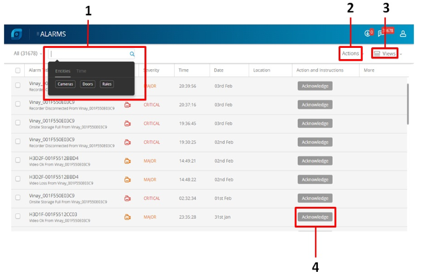

The following figure illustrates the Alarms tab.
The following components are displayed on the screen.
| No. | Field | Description |
| 1 | Search |
Alarms notify the occurrence of events to the operators. The search option enables you to search through the list of alarms based on: a. Cameras b. Doors c. Rules d. Time |
| 2 | Actions |
Enables you to perform the following for all the alarms that appear in the Alarm window. a. Acknowledge: Acknowledge the selected alarm. b. Clear: Automatically clear the alarms when they are acknowledged. c. Freeze Alarm Stream: Stop receiving the new or unacknowledged alarms in the Alarm window. The state of the alarm after it is triggered is referred to as unacknowledged. |
| 3 | Views | Enables you to select the required options to appear as column display. |
| 4 | Acknowledge | Enables you to acknowledge an alarm to accept that the necessary response action is being taken. |
Previous View in Full Screen